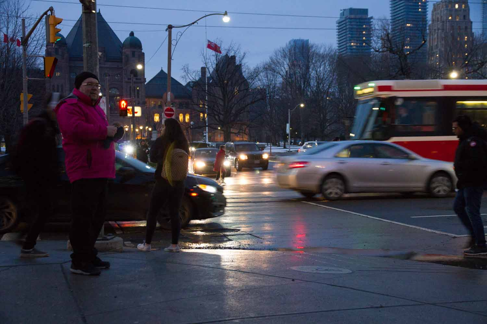
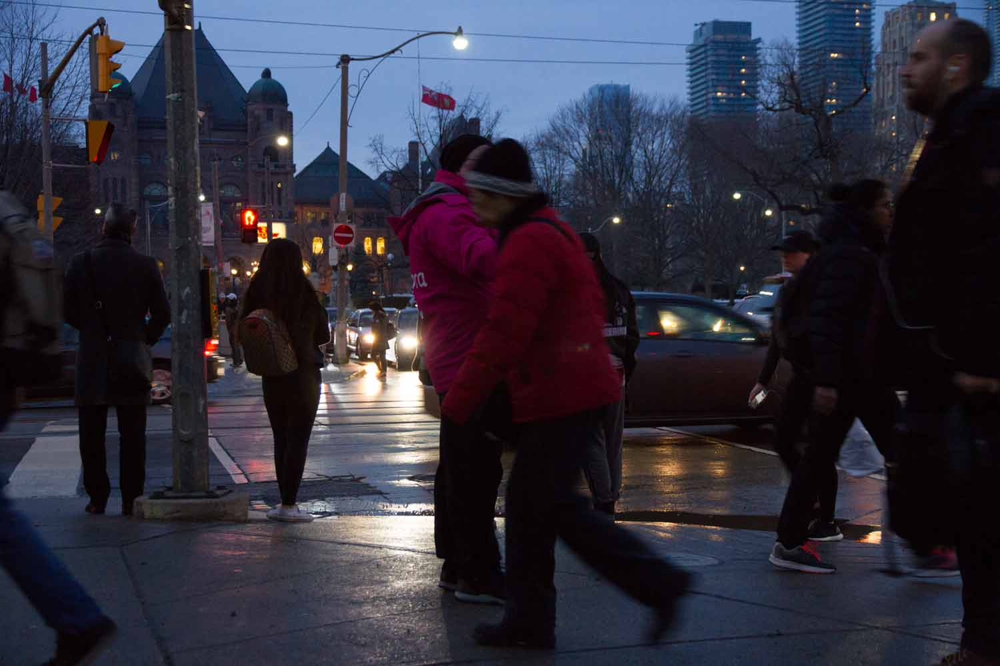
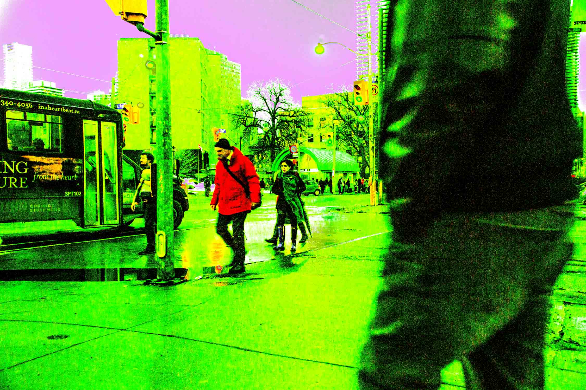
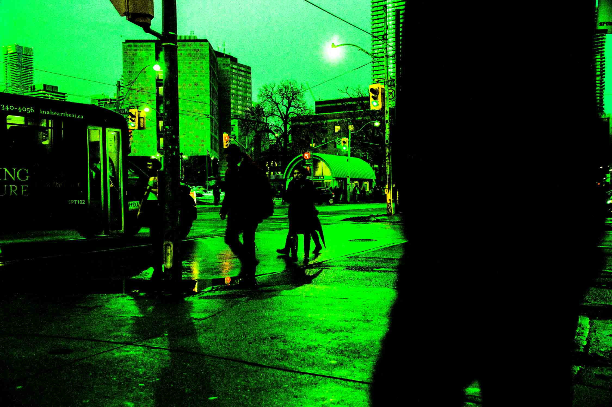
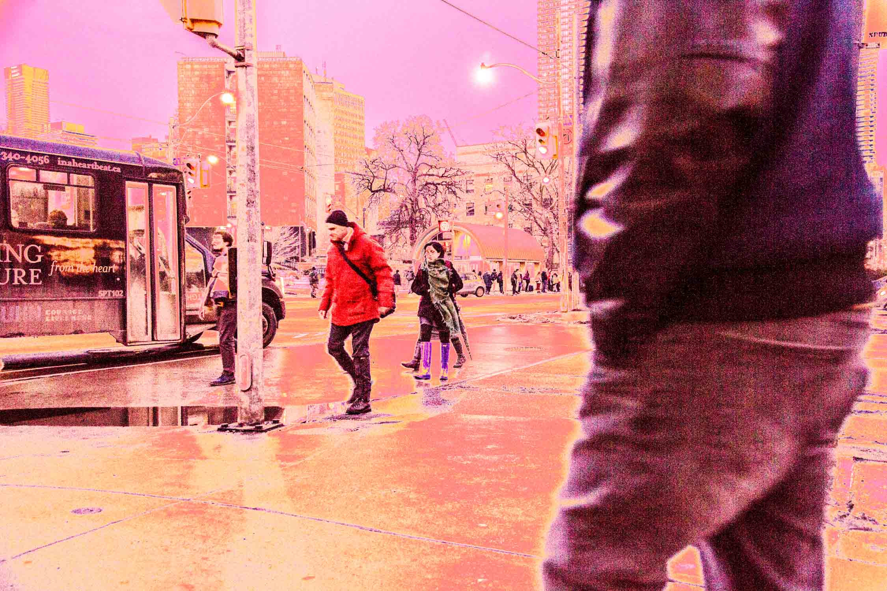
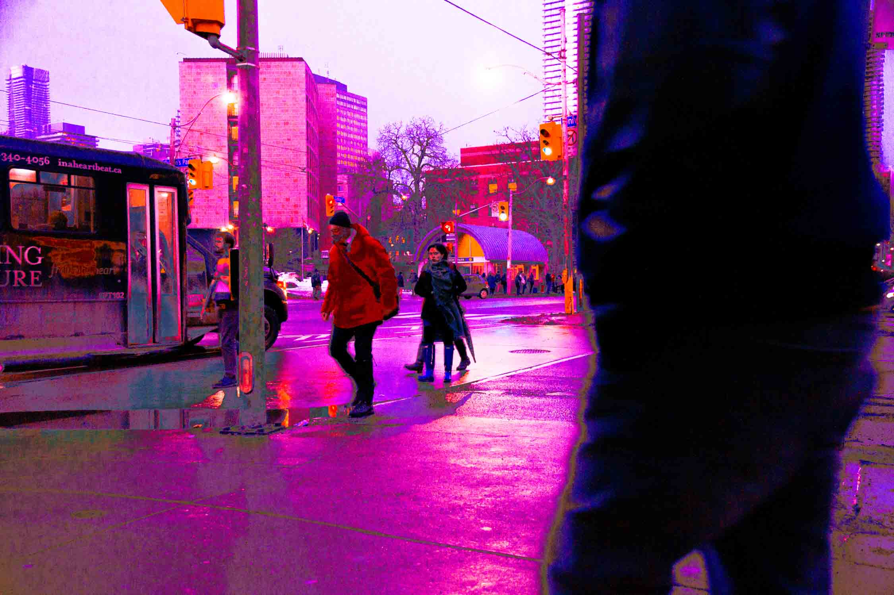
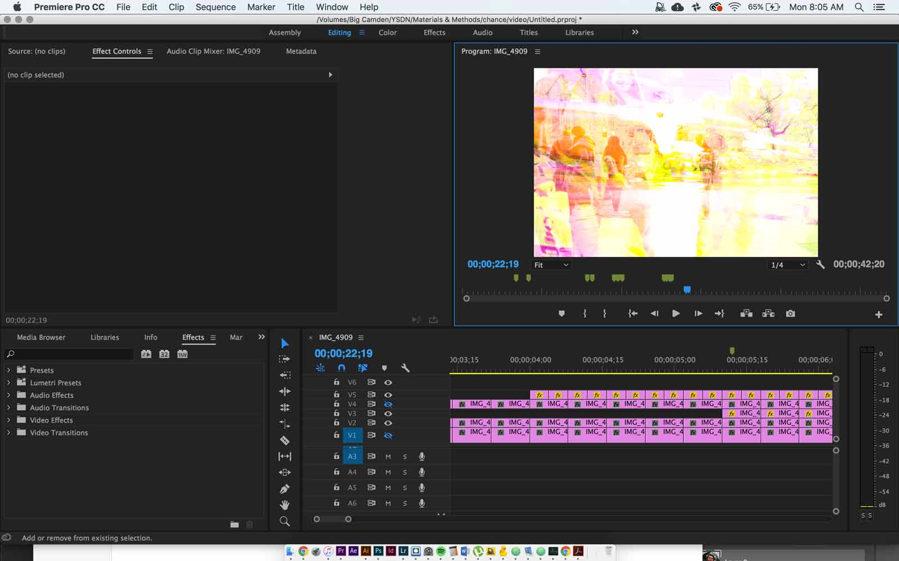
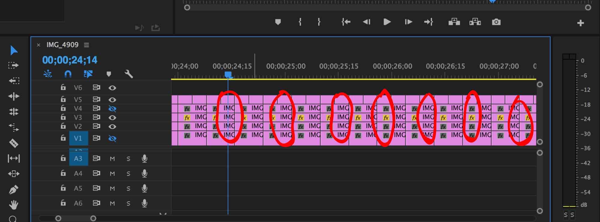

The Process
Project Brief
The goal of this project was to create a piece of art that would be determined entirely by chance, by factors which I had no control over.
The first step taken in this project was to determine the format of the final outcome and the steps to take for the final result to be created. To begin, an artifact or something to work with was to be found, not created. A list of steps in which this artifact was to be treated. These steps should have no room for control. For example, the artifct is to be left outside and the outcome of that step would be determined by weather.
The Process - Introduction
In ‘A Chance In Time’, the artifact used were photographs taken in downton Toronto. I chose to take pictures at random intervals with my camera set up on a tripod at a random location in downtown Toronto. my final product would be a video compiled of stills which were taken from a video exported from Premiere with an intentional error to be given a strange look (inspired by the piece ‘Transformer’ by Tobias Toberg), as well as stills taken from this final video.
Photography


The photos I took look very boring indivdually and their compositions and appearance were determined entirely by external factors such as the weather, the location, the time of day, the state of the traffic lights, how many people happen to be around at the time of the photo, the types of pepole who happen to be around, as well as the vehicles. All of these factors were either at random or totally out of my control.
Photo Effects (Defects?)




After the photos were taken and put in Premiere as a sequence, I had trouble getting the results I was looking for for by manipulating the exoport settings. As an alternative, my next idea to generate very odd effects on the photos was to have someone who has absolutely no experience in photography or in lightroom or any other photo editing programs, edit my photos any way the like. The results were indeed very strange. I had them apply their current setting to every photo and they did that four times.
Video Compiling

At this point I had four of the same photo sequences each with extremely different looks to them. I put each sequence into premiere and stacked them at random. I gave the top layers an overlay appearance so that you could see the different sequences interact with eachother, as I had planned to do oringally.
Results
After doing that, I had a video completed. Instead of stopping there, I decided to take stills from the video because there were some very interesting compositions formed. As an element of chance, as suggested in the critique, I took stills from intervals of time in the video. These intervals were every half a second, every second, two seconds and then five seconds. I came up with five different sequences of stills which were chosen by time.

The results of the time based still sequences can be seen in the final project. Because some of the individual compositions were so interesting, I also printed some of the ones I chose myself to demonstrate the very interesting and aesthetic pieces that I ended up with as a result of pure chance and circumstance. The chosen stills can also be seen in the final project.